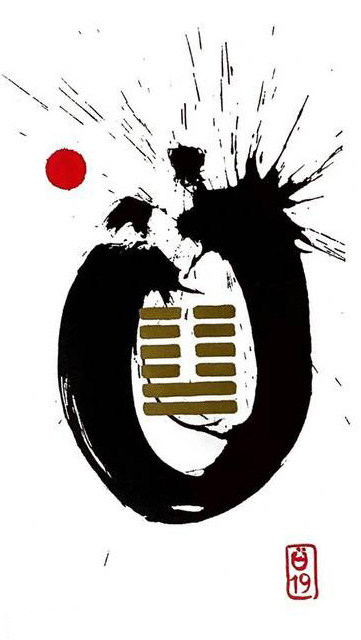

지택림(임할 임)
소길 4
적극 노력하여 일을 만들어가야 한다
서로가 정면을 바라보며 솔직하고 저돌적이며 대담하게행동에 임하는 상황을 표현한 그림
접근.가까이 가다.전진하다.희망.솔선수범.실천.행동.활력.주도적.가득한.반짝이는.밝다..왕성하다.상승하는 영향력, 열정적
연애운
관계가 급속도로 가까워짐.직접 먼저 다가가야 함
사업운
생각만 하지 말고 일단 밀어붙여야 함. 계획을 실천하기. 움직인만큼 얻는다
속마음
썸적극적인 마음.빨리 친해지고 싶은 마음
1년 이상열정적이고 서로 마주보고 있는 마음.진실한 마음
이별 후먼저 다가와서 재회 하고 싶은 마음
솔로연애운
새로운 이성 생길 확률 크다
건강운
중병도 회복될 가능성.위.간.심장.고혈압 조심